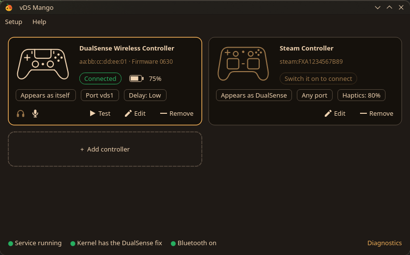
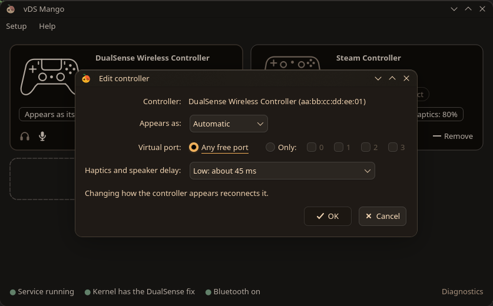

vDS Mango makes a DualSense on Bluetooth look like one on a cable.
Games on Linux get what the cable gives them: haptic feedback, adaptive triggers, the speaker, the microphone and the headphone jack. Only firmware updates still need the cable.

Install
paru -S vds-mango
Any other AUR helper works too. The package starts the vdsd service and installs the udev and audio rules. Get it from the AUR, or read the source on GitHub.
Features
Haptics, adaptive triggers, speaker, microphone and headset over Bluetooth.
A setup wizard that pairs the controller and registers it.
Battery level, firmware version and a test buzz for each controller.
A haptics delay you choose per controller, from about 78 ms down to about 33 ms on the test machine.
No kernel module. It uses vhci_hcd, which ships with the kernel, so there is nothing to build or to sign for Secure Boot.
Other Bluetooth devices keep working.
Set up
Open vDS Mango from the application menu.
Hold Create and PS until the light bar blinks rapidly, then pick the controller in the wizard. It pairs, trusts and registers it.
Press PS. Games now see a USB DualSense.
Press PS again after the computer wakes from sleep.

Edit sets which model games see, which virtual ports the controller may use, and the haptics and speaker delay.
Steam Controller
A 2026 Steam Controller on its wireless Puck can be added in the same wizard. It appears as a DualSense. This part is experimental. The README lists what is mapped.
Reporting problems
Report bugs on the CachyOS Discord. The GitHub issue tracker is not open yet. Paste the summary from Diagnostics > Copy system info.
The README covers the rest: the app, the command line, how it works and building from source.
Credits
vDS Mango is a Linux-only fork of vDS by Jihong Min, with a graphical app and no kernel module to build. You can sponsor him. Microphone and headphone support were contributed to vDS by @TechAntohere. The DualSense output and haptics packet handling is based on DS5Dongle and protocol captures.